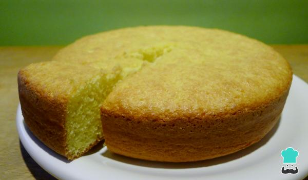

Biscocho de limón

Ingredientes
| Cantidad |
Descripción |
| 6 |
Huevos |
| 280 gr |
Harina (2 tazas) |
| 200 gr |
Azucar (1 taza) |
| 3 cdas |
Aceite vegetal |
| 1 |
Limón (la rayadura) |
A tener en cuenta
- Tiempo de elaboración 1:30 hs
- Rinde 8 porciones
- Dificultad baja
- Costo barato
- Recomendado para niños
Pasos
- Separa las claras de las yemas en recipientes diferentes
- Bate las yemas con el azúcar
- Añade el aceite y la ralladura del limón y seguir batiendo
- Por otro lado, batir las claras a punto nieve
- Integra poco a poco las claras batidas y la harina a la mezcla de yema y azúcar, de forma envolvente y con mucho cuidado para evitar que la masa pierda el volumen
- Engrasa y enharina un molde de 26 cm de diámetro y vuelca la mezcla en él
- lleva al horno por 40 minutos a una temperatura de 180°
- Sabras que está listo al introducir un palillo de madera y éste salga limpio
- Deja enfriar antes de desmoldar